4 Relatedness - an introduction in dartR
Session overview
- Introduction to Calculating Relatedness and the concept of IBD
- Brief introduction to the concept of genetic relatedness
- What does it mean for individuals to be Identical By Descent and how to calculate an IBD coefficient
- Specific methods of calculating relatedness - an overview
- Relatedness in dartR
- Calculating relatedness in dartR - what functionality currently exists
- Main functions and their use
- Pedigrees - their use
- What is a pedigree?
- Their use in calculating relatedness
- Using pedigrees within dartR
- Simulation for relatedness - basics
- Brief follow on from Bernd Gruber’s session
- Overview for inputs and their meaning
- Use of simulations to compare methods of calculating relatedness
- Interpreting output
- Adding complexity - use of EMIDB9
- EMIDB9 - brief recap of introduction
- How to install EMIBD9
- Case Study 1 - Pig breeding dataset
- Introduction to the pig breeding data set
- Cleanup and data preparation
- Comparison of methods
- Case Study 2 - Soay sheep dataset
- Introduction to the Soay sheep dataset
- Cleanup and data preparation
- Comparison of methods
- Inferring an unknown relative - using COLONY
- Intro to COLONY and problem at large
- Reading in data and basic cleanup
- Downloading and installing COLONY binaries
- COLONY run - interpreting output
- Matching unknown SNP with individual in population]
- Additional reading
- References and additional reading
- Exercises
- Exercises to work through
- Input participants own data
- Wrap up
Using pedigrees
Creating pedigrees
We’ll start by reading in some data and sub-setting it - to cut down and run time. There are two possible data sets we’ve provided which have attached pedigrees - Pig and Sheep. We’ve already read in the data sets, using your knowledge of dartR and the genlight format - please subset the data frame from its original size to only 200 individuals and 300 loci please. (hint - for loci use gl.subsample.loci())
Load in either the Pig or Sheep data set and then subset to only 200 individuals and 300 loci.
********************
*** DARTR OBJECT ***
********************
** 1,000 genotypes, 3,000 SNPs , size: 2.8 Mb
missing data: 0 (=0 %) scored as NA
** Genetic data
@gen: list of 1000 SNPbin
@ploidy: ploidy of each individual (range: 2-2)
** Additional data
@ind.names: 1000 individual labels
@loc.names: 3000 locus labels
@loc.all: 3000 allele labels
@pop: population of each individual (group size range: 1000-1000)
@other: a list containing: loc.metrics, loc.metrics.flags, verbose, history, ind.metrics
@other$ind.metrics: id, pop, dad, mom
@other$loc.metrics: array(NA, nLoc(x)), AvgPIC, OneRatioRef, OneRatioSnp, PICRef, PICSnp, CallRate, FreqHomRef, FreqHomSnp, FreqHets, monomorphs, maf, OneRatio, PIC
@other$latlon[g]: no coordinates attachedAn example of what the output should look like:
Starting gl.subsample.loci
Processing genlight object with SNP data
Subsampling at random 300 loci from dartR object
Completed: gl.subsample.loci ********************
*** DARTR OBJECT ***
********************
** 100 genotypes, 300 SNPs , size: 227.9 Kb
missing data: 0 (=0 %) scored as NA
** Genetic data
@gen: list of 100 SNPbin
@ploidy: ploidy of each individual (range: 2-2)
** Additional data
@ind.names: 100 individual labels
@loc.names: 300 locus labels
@loc.all: 300 allele labels
@pop: population of each individual (group size range: 100-100)
@other: a list containing: loc.metrics, loc.metrics.flags, verbose, history, ind.metrics
@other$ind.metrics: id, pop, dad, mom
@other$loc.metrics: array(NA, nLoc(x)), AvgPIC, OneRatioRef, OneRatioSnp, PICRef, PICSnp, CallRate, FreqHomRef, FreqHomSnp, FreqHets, monomorphs, maf, OneRatio, PIC
@other$latlon[g]: no coordinates attachedGenerating pedigrees - draft may include may not
We can now run gl.diagnostics.relatedness with an attached pedigree. We will focus particularly on providing output with the Variance and RMSE output for testing the accuracy of various methods of estimating relatedness. To begin we’ll provide a little hint with CRAN documentation - providing you a rundown of the inputs for the function.
Brief overview of function from CRAN documentation.
Basic Run
We’ll start with a basic - run without use of the RMSE or Var output providing you with the basic output. We’ll generate the item and then you can work out how the access the various slots within the object. (Hint - use the @ accessor)
Starting gl.diagnostics.relatedness
Processing genlight object with SNP data
Starting gl.filter.allna
Identifying and removing loci and individuals scored all
missing (NA)
Deleting loci that are scored as all missing (NA)
Starting gl.filter.heterozygosity Warning: The `size` argument of `element_line()` is deprecated as of ggplot2 3.4.0.
ℹ Please use the `linewidth` argument instead.
ℹ The deprecated feature was likely used in the dartR.base package.
Please report the issue at <https://groups.google.com/g/dartr?pli=1>.Warning: The `size` argument of `element_rect()` is deprecated as of ggplot2 3.4.0.
ℹ Please use the `linewidth` argument instead.
ℹ The deprecated feature was likely used in the dartR.base package.
Please report the issue at <https://groups.google.com/g/dartr?pli=1>. Processing genlight object with SNP data
Retaining individuals with heterozygosity in the range 0 to 0.7
Minimum individual heterozygosity 0.2467
Maximum individual heterozygosity 0.4
Completed: gl.filter.heterozygosity
Deleting individuals that are scored as all missing (NA)
Completed: gl.filter.allna
Processing genlight object with SNP data
Starting gl2related
Processing genlight object with SNP data
Completed: gl2related
user system elapsed
0.214 0.016 0.233
Reading output files into data.frames... Done!
Starting gl.grm
Processing genlight object with SNP data
Processing genlight object with SNP data
Completed: gl.grm ********************
*** OBJECTS ***
********************
@InputDf: Original genlight input
@SimOutput: NULL
@corOutList: NULL
@corVals: NULL
@plotList: List of plots - Ethan Halford
- Ethan Halford
 - Ethan Halford
- Ethan Halford
Generating plots with RMSE and Var
By now you should be able to figure out how to generate plots using your presaved datatset - now try and calculate RMSE and Var using the gl.diagnostics.relatedness, and then access the resulting plots. If in doubt you can check the hint below however please try by yourself first.
Starting gl.diagnostics.relatedness
Processing genlight object with SNP data
Starting gl.filter.allna
Identifying and removing loci and individuals scored all
missing (NA)
Deleting loci that are scored as all missing (NA)
Starting gl.filter.heterozygosity
Processing genlight object with SNP data
Retaining individuals with heterozygosity in the range 0 to 0.7
Minimum individual heterozygosity 0.2467
Maximum individual heterozygosity 0.4
Completed: gl.filter.heterozygosity
Deleting individuals that are scored as all missing (NA)
Completed: gl.filter.allna
Processing genlight object with SNP data
Starting gl2related
Processing genlight object with SNP data
Completed: gl2related
user system elapsed
0.210 0.016 0.228
Reading output files into data.frames... Done!
Starting gl.grm
Processing genlight object with SNP data
Processing genlight object with SNP data
Completed: gl.grm
Starting gl.colors
Selected color type con
Completed: gl.colors
Starting gl.colors
Selected color type con
Completed: gl.colors @rmsePlot: Plot of RMSE bewteen actual and estimated related values
@varPlot: Plot of variance bewteen actual and estimated related values - Ethan Halford
- Ethan Halford
 - Ethan Halford
- Ethan Halford
Running a simulation
We’ll next move on to running simulations - used to compare methods of calculating relatedness. The simulations are conducted using the gl.sim functions found in the dartR.sim package - https://cran.r-project.org/web/packages/dartR.sim/refman/dartR.sim.html. First we begin with reading in the reference table - containing the parameters that will encode the simulation. Whilst all this is done for you as a part of the function - we must still read in two important CSV files - ref_variables.csv and sim_variables.csv - used to provide the parameters for the simulation.
We’ll begin with reading both sim_variables and ref_variables to check if they exist,
Brief overview of Reference and Simulation parameters.
As defined in the dartR.sim documentation there are more than X parameters one can edit when setting up a simulation. For our purposes we will focusing on those having the most pronounced effects on relatedness.
Chromosome length/chunk
- Chunk Number - # of chromosome chunks
- Chunk_bp - number of base pairs per chromosome chunk
- Chunk_cm - number of centimorgans per chromosome chunk
These settings are all functions of chromosome length - defining the number of base pairs found along each chromosome. As discussed above, relatedness is partially a function of chromosome length - such that increasing the average length induces X result and decreasing it induces Y result - take caution in this regard.
Simulation variables
Replace parents - whether parents reproduce more than once Influences number of offspring found within population - obviously has implications for relatedness …..
Chromosome_name - chromosome from which to extract allele frequencies Influences reference allele frequencies - determines reference allele frequency from which estimates of IBD are drawn. As such this choice has an out sized effect on estimates of relatedness.
Your first simulation run
Having read in the files necessary to run the simulation we will now actually conduct a simulation run - using our ref_variables and sim_variables files read in earlier. Now we will assume you have enough know-how to run a basic simulation using prior knowledge provided to you in the tutorial. We will have however start you off, with the important note being that any simulation must be run for at least 3 generations to allow for the creation of the sufficient parent-offspring relationships to allow for the calculation of relatedness levels.
Starting gl.diagnostics.relatedness
Processing genlight object with SNP data
Starting gl.filter.allna
Identifying and removing loci and individuals scored all
missing (NA)
Deleting loci that are scored as all missing (NA)
Starting gl.filter.heterozygosity
Processing genlight object with SNP data
Retaining individuals with heterozygosity in the range 0 to 0.7
Minimum individual heterozygosity 0.2467
Maximum individual heterozygosity 0.4
Completed: gl.filter.heterozygosity
Deleting individuals that are scored as all missing (NA)
Completed: gl.filter.allna
Processing genlight object with SNP data
Starting gl2related
Processing genlight object with SNP data
Completed: gl2related
user system elapsed
0.212 0.016 0.228
Reading output files into data.frames... Done!
Starting gl.grm
Processing genlight object with SNP data
Processing genlight object with SNP data
Completed: gl.grm Accessing your sim object
Having successfully conducted your first simulation run we can now check the slots of our simulation item - with a similar method as above. To find the slot names you can check the CRAN documentation provided on the previous page.
********************
*** OBJECTS ***
********************
@InputDf: Original genlight input
@SimOutput: NULL
@corOutList: NULL
@corVals: NULL
@plotList: NULLInstalling EMIBD9
In addition to the tests provided by the related package we provide the option to include EMIBD9 in the suite of tests run. First we must install EMIDB9 and its associated binaries before doing so. Binaries and installation instructions can be find at - https://www.zsl.org/about-zsl/resources/software/emibd9.
Mac
Once installation has been completed we must make the binary accessible to our system - to do access the terminal and input the following commands as seen below.
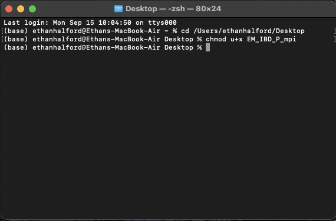
Example of comparing methods - Pig datatset
Introduction to dataset
To illustrate the outcome of using different methods for estimating relatedness, we’ll conduct said comparison on an example data set - with an attached pedigree - in this case we’ll be using the Pig data set as described in Cleveland et al (2021). This consists of genomic data taken from 3534 pigs found on farms across the United States. In addition to extensive genomic records for a large majority of the population there exists an extensive life history, including age, sex and parentage. As such this data set provides a perfect example for comparing the results of different methods of estimating relatedness - given the possession of an extensive pedigree against which to compare the results. In addition the data set is found to contain high levels of genetic structure - with 2 highly pronounced populations - as such it allows use to analyse the efficacy of different methods at estimating relatedness in the presence of confounding factors - such as inbreeding, assortative mating, etc.
Data cleanup and imaging
Cleanup
We’ll start with a simple sweep of the datatset removing those loci with low read count and filtering on depth.
pigFilter <- gl.filter.callrate(pigTest, method = "ind", threshold = 0.5)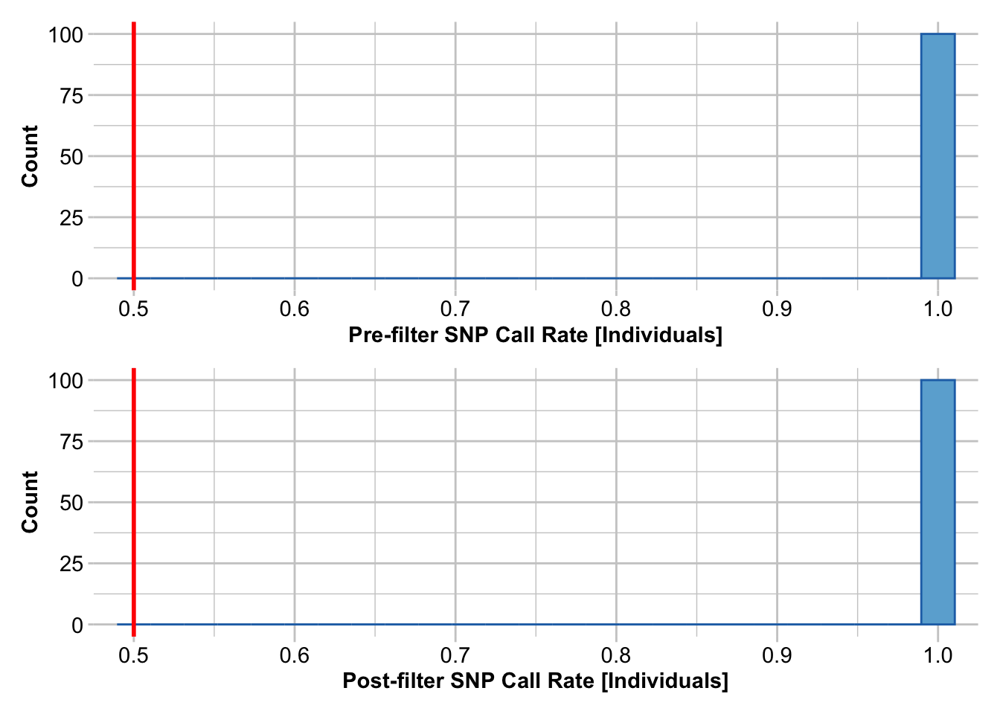
pigFilter<- gl.filter.monomorphs(pigFilter,verbose = 5)pigFilter <- gl.filter.callrate(pigFilter,method = "loc", threshold = 0.95,verbose = 5)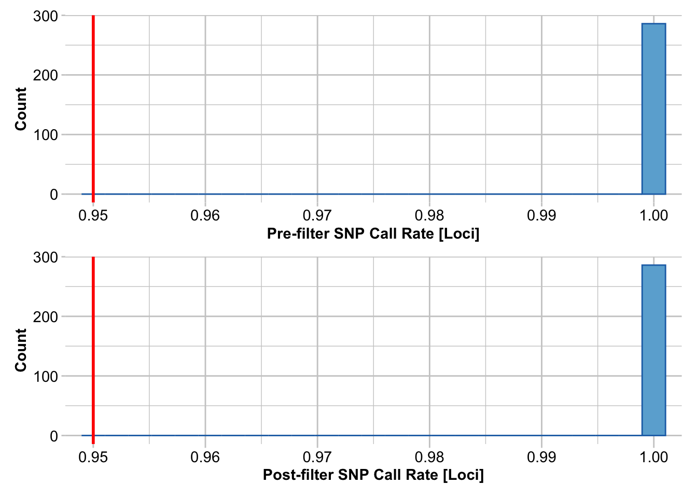
Having filtered for a variety of metrics such as call rate and monomorphs we will now create a PCOA plot to examine they extent of genetic structure extent within the population
Starting gl.pcoa.plot
Processing an ordination file (glPca)
Processing genlight object with SNP data
Plotting populations in a space defined by the SNPs
Preparing plot .... please wait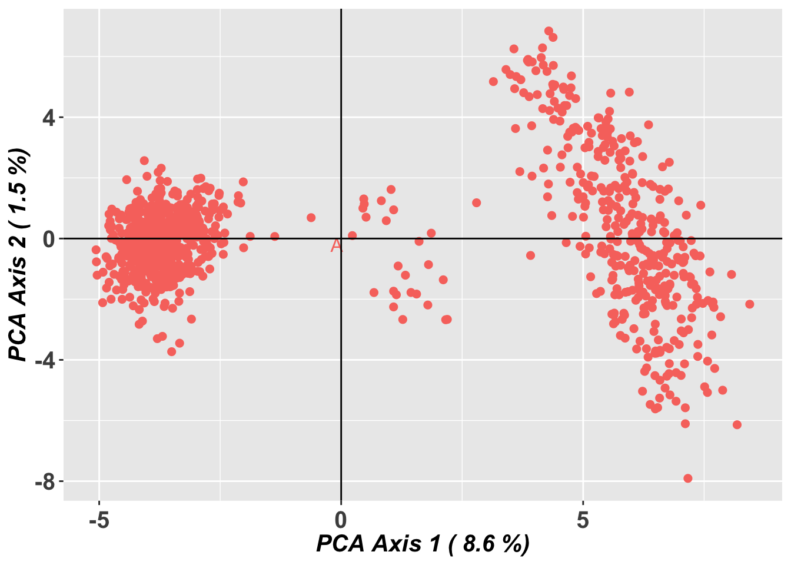
Completed: gl.pcoa.plot As seen, there appears to be quite strong genetic structure within the population - with the clear segregation of two populations. We’ll begin with a simple gl.relatedness.diagnostics run without consideration for this genetic structure.
diagOne <- readRDS("data/diagOne.rds")
diagOne@plotList$Iteration1[[1]]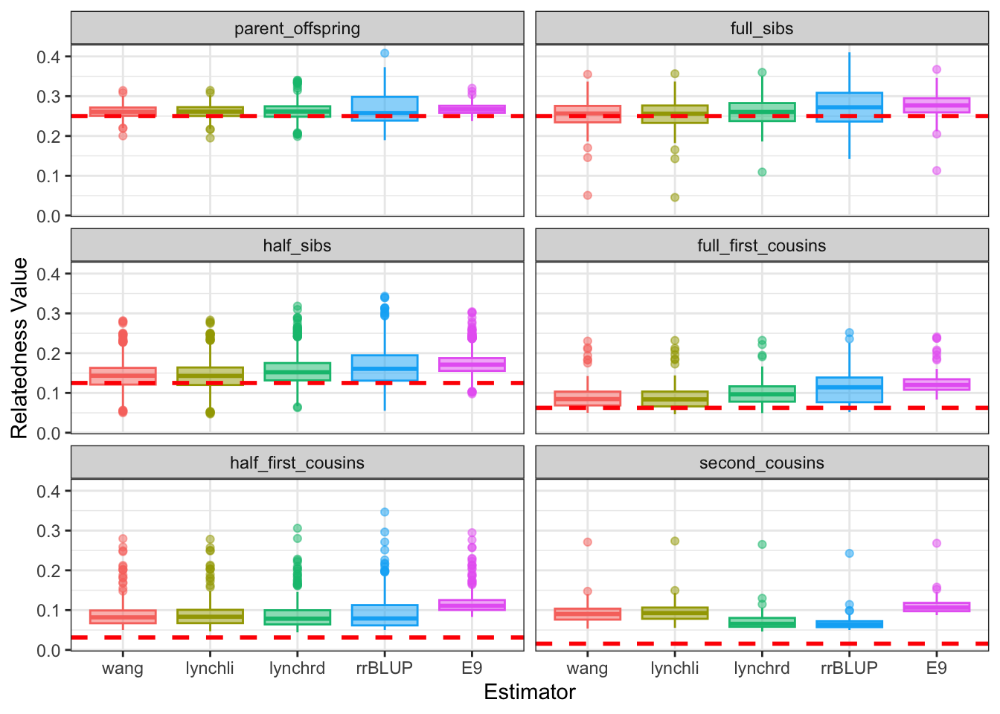
diagOne <- readRDS("data/diagOne.rds")
diagOne@plotList$Iteration1[[2]]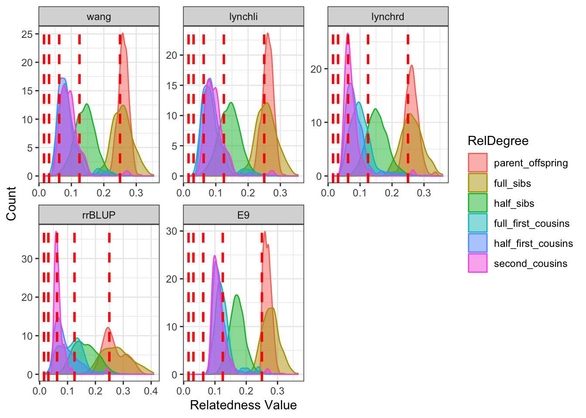
As we can see certain methods - EMIBD9 and Wang (2002) have a tendency to overestimate the levels of relatedness present - as such its evident that due the aforementioned methods used in calculating relatedness it struggles with genetic structure present in the data set. To compensate we’ll separate out the two populations and then perform the analysis separately within each population to see the resulting effects on the estimates.
Returning to the PCA plot, as discussed above we see 2 well-deliminated populations as such we will separate individuals down the middle, either to the left or right of the y axis, being populations A and B respectively.
groupA <- unique(which(pigFilterPCA$scores[,1] < 0))
groupB <- unique(which(pigFilterPCA$scores[,1] > 0))
groupA <- pigFilter[groupA]
groupB <- pigFilter[groupB]Group A
diagGroupA <- readRDS("data/diagGroupA.rds")
diagGroupA@plotList$Iteration1[[1]]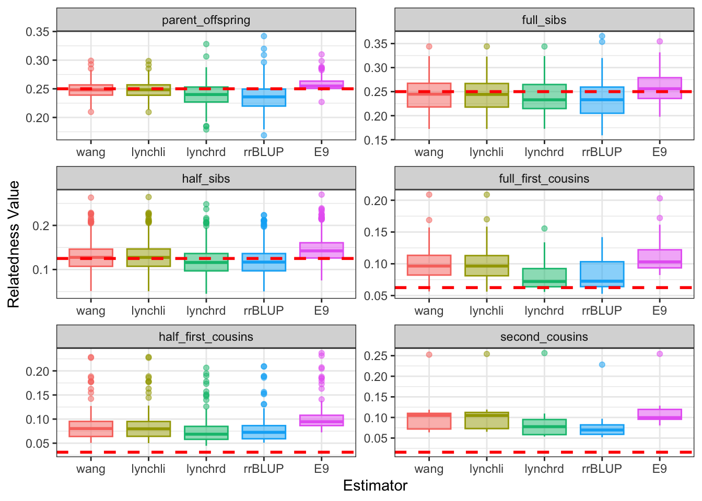
diagGroupA@plotList$Iteration1[[2]]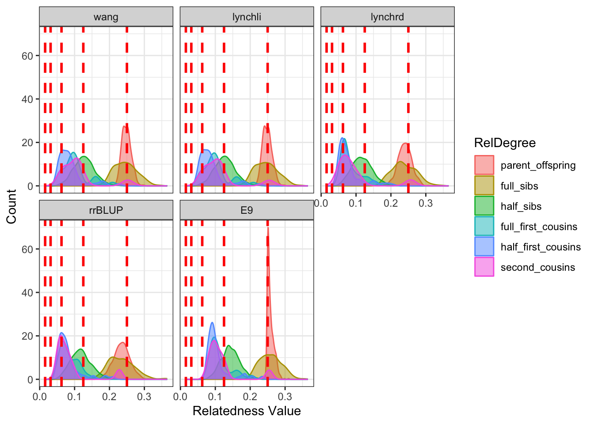
Group B
diagGroupB <- readRDS("data/diagGroupB.rds")
diagGroupB@plotList$Iteration1[[1]]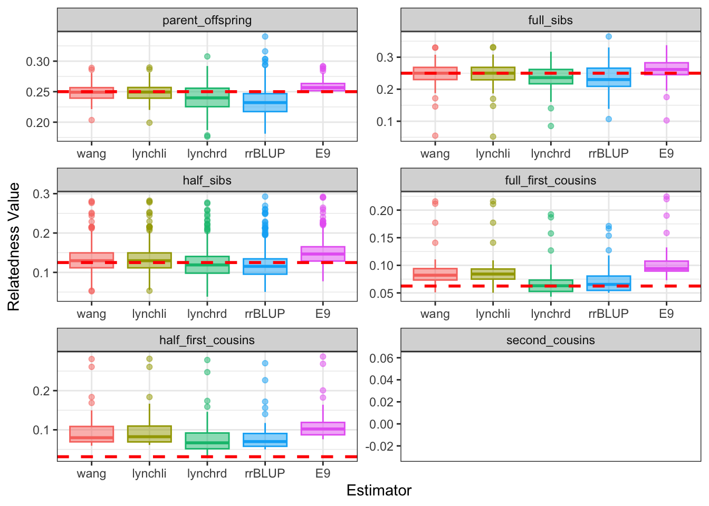
diagGroupB@plotList$Iteration1[[2]]We can now compare the results for both groupA and groupB running them separately through gl.diagnostics.relatedness
As we can see by separating out the two populations we improved the resulting fit of the estimates - with EMIBD9 having the most improvement - likely a result of the reduction in genetic structure seen.
Example of comparing methods - Soay Sheep
Introduction
The Soay sheep is a breed descended from feral sheep found on the island of Soay off the North coast of Scotland, in the St Kilda Archipelago. A population found on the island of Hirta has, since the 1950’s, been subject to an extensive study, serving as a model for the research of evolutionary and population dynamics given its feral and unmanaged state. In the last 20 years with the introduction of micro-satellite, SNP and other complexity reduction methods - the study has taken on a new dimension with the addition of whole genome sequencing - allowing scientists to store whole genomic data for individuals within the population. In addition - there exists a large and comprehensive pedigree - providing a surfeit of data on parentage, sex, age and a variety of other characteristics.
Cleanup
We’ll start with a simple sweep of the datatset removing those loci with low read count and filtering on depth.
sheepFilter <- gl.filter.callrate(sheepTest, method = "ind", threshold = 0.5)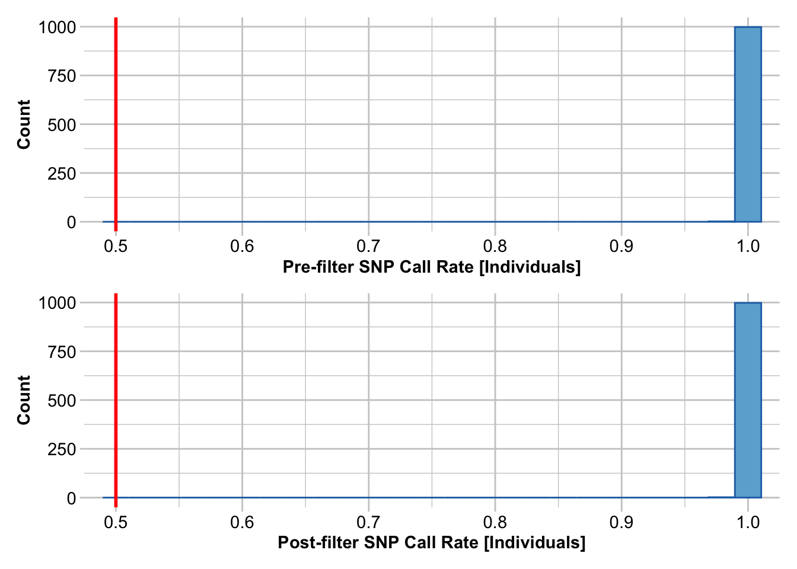
sheepFilter<- gl.filter.monomorphs(sheepFilter,verbose = 5)sheepFilter <- gl.filter.callrate(sheepFilter,method = "loc", threshold = 0.95,verbose = 5)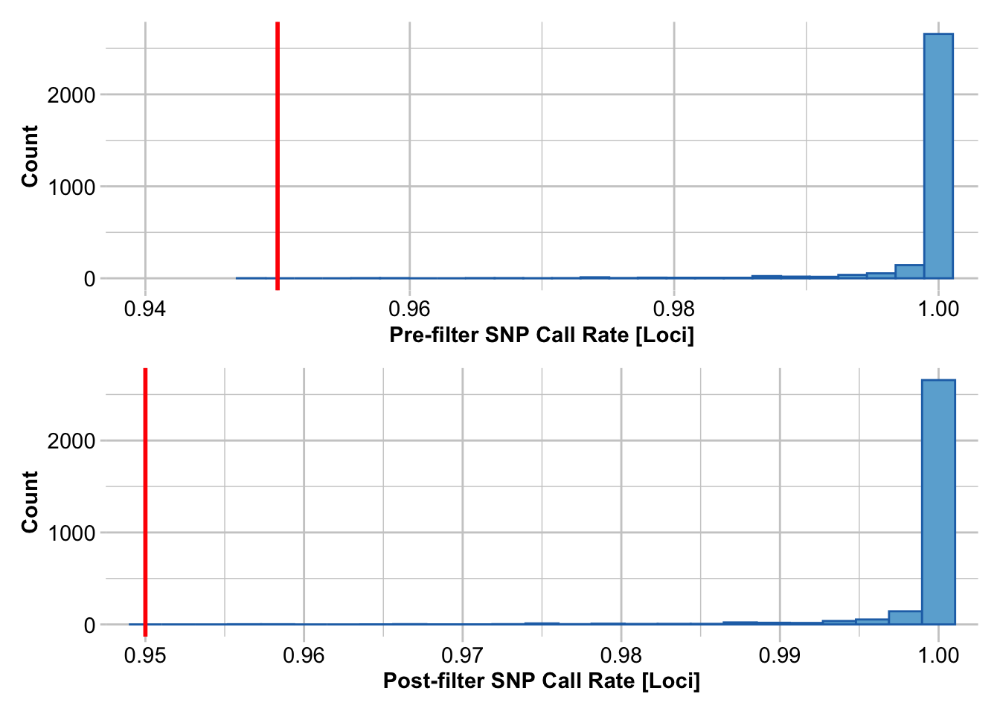
Having filtered for a variety of metrics such as call rate and monomorphs we will now create a PCOA plot to examine they extent of genetic structure extent within the population
Starting gl.pcoa.plot
Processing an ordination file (glPca)
Processing genlight object with SNP data
Plotting populations in a space defined by the SNPs
Preparing plot .... please wait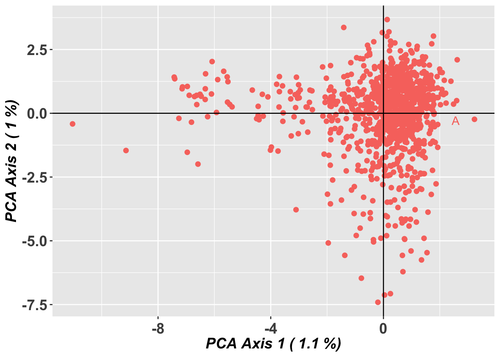
Completed: gl.pcoa.plot As seen by the PCA there appears to be little if any genetic structure evident within the population - that is there appears to be minimal if any sub-populations present within the group at large. As such we can reasonably expect the assumptions of our related estimates to hold - primarily it being that the population is large, outbred and undergoes random mating.
Inferring an unknown relative - COLONY
COLONY is a program developed by Jinliang Wang at the ZSL for the inference of parentage and sibship from multilocus genelogical data. Through the use of a full-pedigree approach - COLONY can more accurately infer relatedness, however at the cost of an increase in computational demands. Samples are assumed to be taken from a large randomly mating population. Individuals are then partioned into three subsamples - offspring, candidate father and candidate mother. Offspring are either full-sibs, half-sibs or unrelated. - Come back to it.
The problem
You have been breeding a small hatch of central bearded Dragons (Pogona Vitticeps), for the purposes of a full genome study. You have a highly fecund female - LSWt111 - who has had a clutch of 24 eggs. The issue arises in that you have no idea who the potential father could be - there are numerous candidate males within the enclosure. As such you need to reconstruct a paternal genotype from the SNP data you have for LSWt111 and her offspring.
Generating a paternal genotype with COLONY
1. Reading in the data
We’ll begin by reading in the RDS data containing the data for LSWt111 and her offspring.
LSWt111 <- readRDS("data/bella.RData")
LSWt111@other$ind.metrics id pop X drainage species latitude
Bella_egg_1 Bella_egg_1 Bella_egg NA Bellinger Myuchelys_georgesi -30.4208
Bella_egg_9 Bella_egg_9 Bella_egg NA Bellinger Myuchelys_georgesi -30.4208
Bella_egg_17 Bella_egg_17 Bella_egg NA Bellinger Myuchelys_georgesi -30.4208
Bella_egg_2 Bella_egg_2 Bella_egg NA Bellinger Myuchelys_georgesi -30.4208
Bella_egg_10 Bella_egg_10 Bella_egg NA Bellinger Myuchelys_georgesi -30.4208
Bella_egg_18 Bella_egg_18 Bella_egg NA Bellinger Myuchelys_georgesi -30.4208
Bella_egg_3 Bella_egg_3 Bella_egg NA Bellinger Myuchelys_georgesi -30.4208
Bella_egg_11 Bella_egg_11 Bella_egg NA Bellinger Myuchelys_georgesi -30.4208
Bella_egg_19 Bella_egg_19 Bella_egg NA Bellinger Myuchelys_georgesi -30.4208
Bella_egg_4 Bella_egg_4 Bella_egg NA Bellinger Myuchelys_georgesi -30.4208
Bella_egg_12 Bella_egg_12 Bella_egg NA Bellinger Myuchelys_georgesi -30.4208
Bella_egg_20 Bella_egg_20 Bella_egg NA Bellinger Myuchelys_georgesi -30.4208
Bella_egg_5 Bella_egg_5 Bella_egg NA Bellinger Myuchelys_georgesi -30.4208
Bella_egg_13 Bella_egg_13 Bella_egg NA Bellinger Myuchelys_georgesi -30.4208
Bella_egg_21 Bella_egg_21 Bella_egg NA Bellinger Myuchelys_georgesi -30.4208
Bella_egg_6 Bella_egg_6 Bella_egg NA Bellinger Myuchelys_georgesi -30.4208
Bella_egg_14 Bella_egg_14 Bella_egg NA Bellinger Myuchelys_georgesi -30.4208
Bella_egg_22 Bella_egg_22 Bella_egg NA Bellinger Myuchelys_georgesi -30.4208
Bella_egg_7 Bella_egg_7 Bella_egg NA Bellinger Myuchelys_georgesi -30.4208
Bella_egg_15 Bella_egg_15 Bella_egg NA Bellinger Myuchelys_georgesi -30.4208
Bella_egg_23 Bella_egg_23 Bella_egg NA Bellinger Myuchelys_georgesi -30.4208
Bella_egg_8 Bella_egg_8 Bella_egg NA Bellinger Myuchelys_georgesi -30.4208
Bella_egg_16 Bella_egg_16 Bella_egg NA Bellinger Myuchelys_georgesi -30.4208
Bella_egg_24 Bella_egg_24 Bella_egg NA Bellinger Myuchelys_georgesi -30.4208
LSWt111 LSWt111 Bella_mum NA Bellinger Myuchelys_georgesi -30.4208
longitude service plate_location
Bella_egg_1 152.7541 DFwt25-10896 1-A1
Bella_egg_9 152.7541 DFwt25-10896 1-A2
Bella_egg_17 152.7541 DFwt25-10896 1-A3
Bella_egg_2 152.7541 DFwt25-10896 1-B1
Bella_egg_10 152.7541 DFwt25-10896 1-B2
Bella_egg_18 152.7541 DFwt25-10896 1-B3
Bella_egg_3 152.7541 DFwt25-10896 1-C1
Bella_egg_11 152.7541 DFwt25-10896 1-C2
Bella_egg_19 152.7541 DFwt25-10896 1-C3
Bella_egg_4 152.7541 DFwt25-10896 1-D1
Bella_egg_12 152.7541 DFwt25-10896 1-D2
Bella_egg_20 152.7541 DFwt25-10896 1-D3
Bella_egg_5 152.7541 DFwt25-10896 1-E1
Bella_egg_13 152.7541 DFwt25-10896 1-E2
Bella_egg_21 152.7541 DFwt25-10896 1-E3
Bella_egg_6 152.7541 DFwt25-10896 1-F1
Bella_egg_14 152.7541 DFwt25-10896 1-F2
Bella_egg_22 152.7541 DFwt25-10896 1-F3
Bella_egg_7 152.7541 DFwt25-10896 1-G1
Bella_egg_15 152.7541 DFwt25-10896 1-G2
Bella_egg_23 152.7541 DFwt25-10896 1-G3
Bella_egg_8 152.7541 DFwt25-10896 1-H1
Bella_egg_16 152.7541 DFwt25-10896 1-H2
Bella_egg_24 152.7541 DFwt25-10896 1-H3
LSWt111 152.7541 DFwt25-10896 2-F5As expected the dataset contains 25 individuals - which if we investigate the individual metrics section - contains LSWt111 and her 24 offspring - each encoded as Bella_egg_#. We can now perform some basic filtering as shown previously - focusing on call rate, missingness, sex-linked genes and monomorphs
2. Filtering
1. Call rate
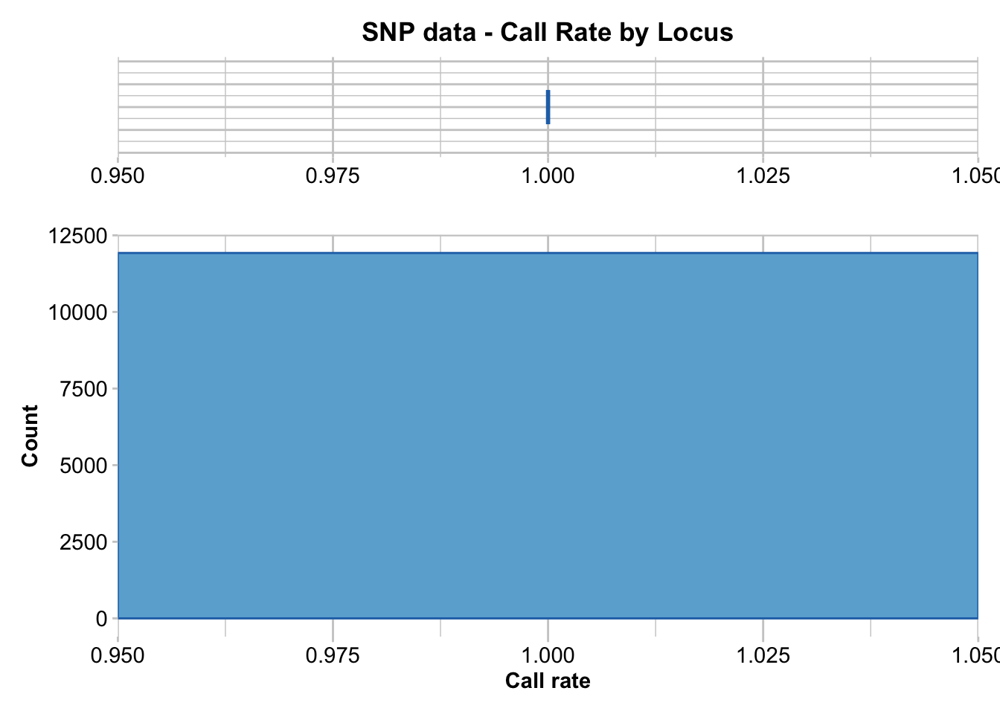
As we can see - callrate across all individuals is 1 - which would suggest there is no need to filter on callrate - even across loci there appears to be a high average callrate.
2. Read depth
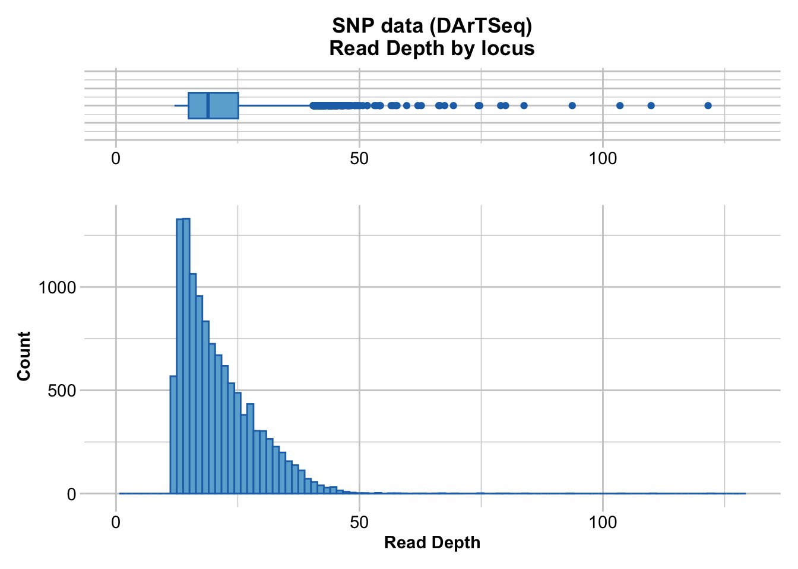
Read depth is quite low across all individuals - average of approximately “X”. As such we will set a range for filtering bewteen 10 and the max read depth of the sample - so as to capture the majority of
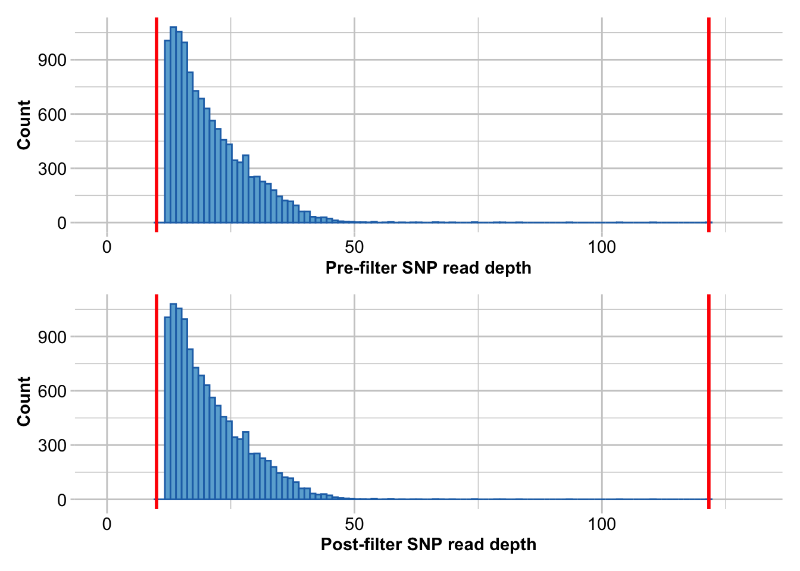
3. Minor alleles, secondaries, HWE
LSWt111 <- gl.filter.maf(LSWt111,threshold = 3,verbose = 5)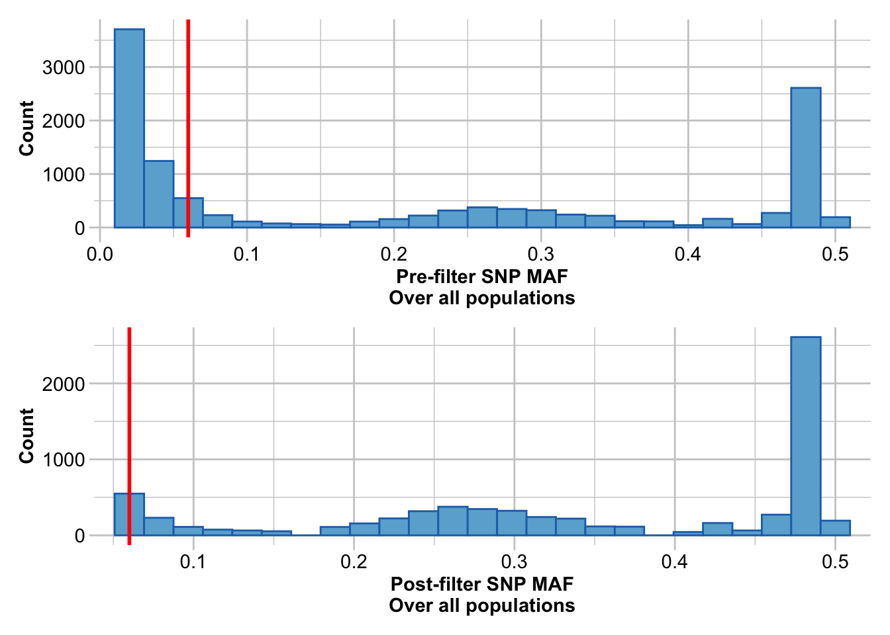
LSWt111 <- gl.filter.secondaries(LSWt111,verbose = 5)
LSWt111 <- gl.filter.hwe(LSWt111,verbose = 5)4. Downloading and preparing COLONY
The source for COLONY can be found at the ZSL website - under the “software” banner - https://www.zsl.org/about-zsl/resources/software/colony. After downloading the relevant binary for your system you will then have to through the steps outlined in the relevant README.txt file.
For this tutorial will we focus on UNIX systems (Linux/MacOS).
After downloading and unwrapping the relevant folder - we must prepare the binaries for use by R. Step by step instructions can be found in the image below.
\begin{center}
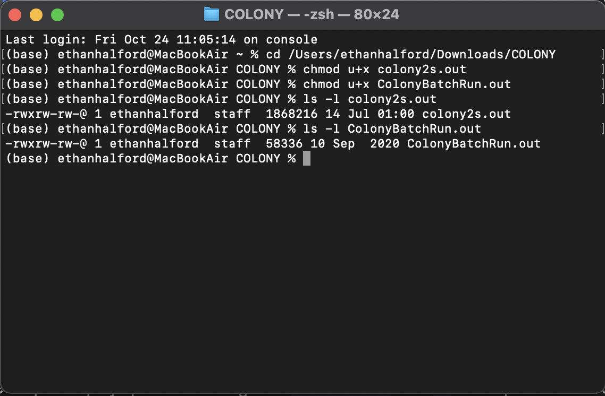
\end{center}First we should navigate to the folder containing the binaries; in this case its found in my downloads, be sure to use the specific directory in which the binary is stored on your computer.
Next we make the binaries executable, using the chmod u+x command, as seen above. On Unix systems (MacOs/Linux) this must be done for both the colony2s.out and ColonyBatchRun.out files.
Having completed these steps, we can check our privileges for the files to ensure our commands have worked. Using ls -l /path/to/file (as above), we can see we have given ourselves read/write access to both files - ensuring they are usable by COLONY.
5. Preparing data
The data must now be prepped for a COLONY run - namely by encoding the metadata file to include 3 columns which encode the parents - ie YES for mother, father or offspring.
mother <- rep("no", nrow(LSWt111$other$ind.metrics))
father <- rep("no", nrow(LSWt111$other$ind.metrics))
offspring <- rep("yes", nrow(LSWt111$other$ind.metrics))
LSWt111$other$ind.metrics$mother <- mother
LSWt111$other$ind.metrics$father <- father
LSWt111$other$ind.metrics$offspring <- offspring
LSWt111$other$ind.metrics$mother[25] <- "yes"
LSWt111$other$ind.metrics$offspring[25] <- "no"
tail(LSWt111$other$ind.metrics[,c("id", "mother", "father", "offspring")]) id mother father offspring
Bella_egg_15 Bella_egg_15 no no yes
Bella_egg_23 Bella_egg_23 no no yes
Bella_egg_8 Bella_egg_8 no no yes
Bella_egg_16 Bella_egg_16 no no yes
Bella_egg_24 Bella_egg_24 no no yes
LSWt111 LSWt111 yes no noWe can now run COLONY like so:
paternalinfer <- infer_paternal_genotypes(LSWt111,
mother_id = "LSWt111",
offspring_ids = LSWt111$ind.names[1:24])We can now include the father in the genlight object containing the mother and offspring - like so:
fatherInfer <- as.data.frame(paternalinfer$inferred_father,
row.names = paternalinfer$SNP)
colnames(fatherInfer) <- c("Bella_Father")
fatherInferGen <- fatherInfer %>%
{.<- t(.);.}
bellaRMatrix <- as.matrix(LSWt111)
fatherMat <- as.matrix(fatherInferGen)
combineR <- rbind(bellaRMatrix, fatherMat) %>%
{. <- as.genlight(.);.}
combineR@other <- LSWt111@other
combineR@pop <- as.factor(rep("A", nInd(combineR)))
combineR <- combineR %>%
{position(.) <- 1:nLoc(.); .} %>%
{chromosome(.) <- rep("1", nLoc(.));.}We can now perform a quick PCA to check if the COLONY results are plasuible.
Starting gl.pcoa
Processing genlight object with SNP data
Performing a PCA, individuals as entities, loci as attributes, SNP genotype as stateFound more than one class "dist" in cache; using the first, from namespace 'BiocGenerics'Also defined by 'spam'Found more than one class "dist" in cache; using the first, from namespace 'BiocGenerics'Also defined by 'spam'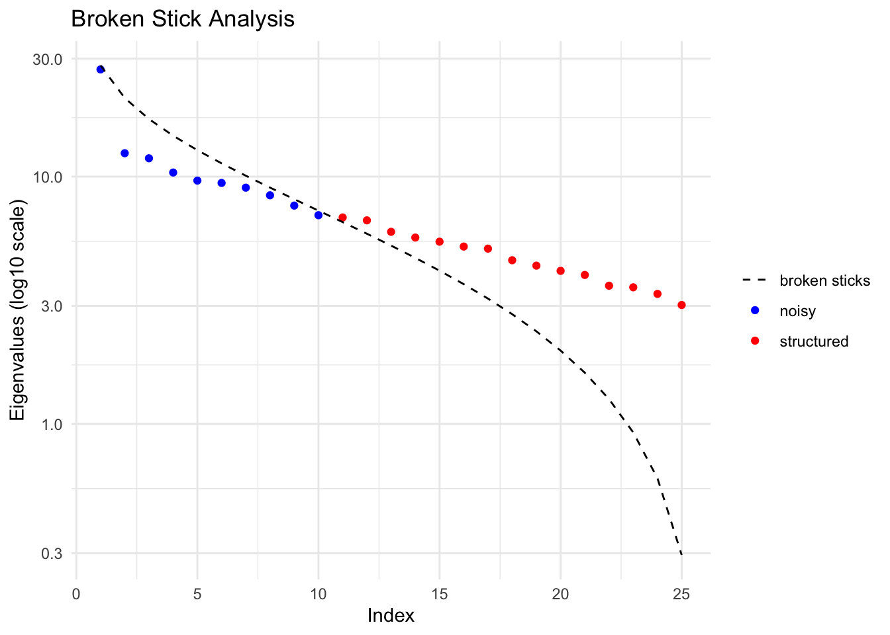
Starting gl.colors
Selected color type 2
Completed: gl.colors
Completed: gl.pcoa Starting gl.pcoa.plot
Processing an ordination file (glPca)
Processing genlight object with SNP data
Plotting populations in a space defined by the SNPs
Preparing plot .... please wait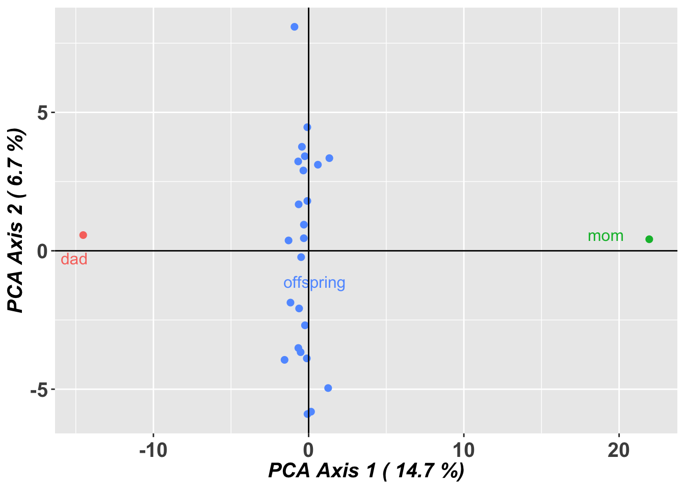
Completed: gl.pcoa.plot 
As expected we see the parents segregate to two separate axis, with the offspring being equidistant from both - as expected in individuals sharing 50% of each parents DNA.
6. Finding the father in the population
Having successfully created an SNP fingerprint for a simulated father within our data set - our goal is now to found said father within the remaining individuals of the population.
Whilst there exists a plethora of potential methods by which we can match an unknown SNP set to an individual within a population - we’ve elected to use a simple method - hamming distance, as deployed in the find-by-SNP repo github. Hamming distance measures the number of positions at which corresponding strings differ, and as such is an efficient method for comparing SNP sets - being encoded in bits - either 0, 1 or 2.
- Potential models to use
- littleblackfish - find by SNP
- cran/hip hop
X. Simulation run - dont think is neccessary - might remove
We can now run a simulation and analyse the output using the gl.diagnostics.relatedness function form the dartR.captive package.
LSWt111Sim <- gl.diagnostics.relatedness(combineR,
cleanup = T,
ref_variables = "data/ref_variables.csv",
sim_variables = "data/sim_variables.csv",
run_sim = T,
which_tests = c("wang", "lynchli"),
IncludePlots = T,
rmseOut =T,
varOut = F,
runE9 = T,
e9Path = "data",
e9parallel = T,
nCores = 4,
numberIterations = 1,
numberGenerations = 3,
includedPed = F
)LSWt111Sim@plotList[[1]][[1]]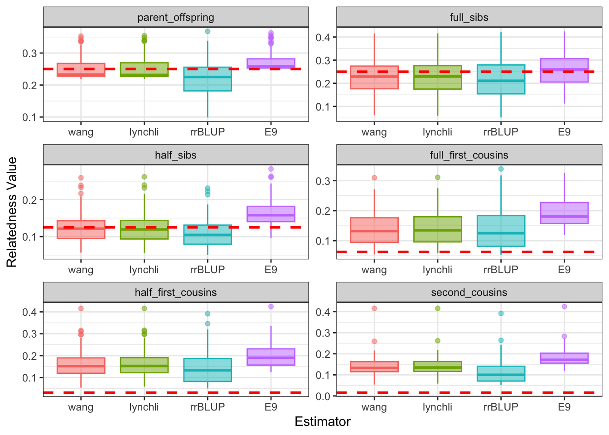
LSWt111Sim@plotList[[1]][[2]]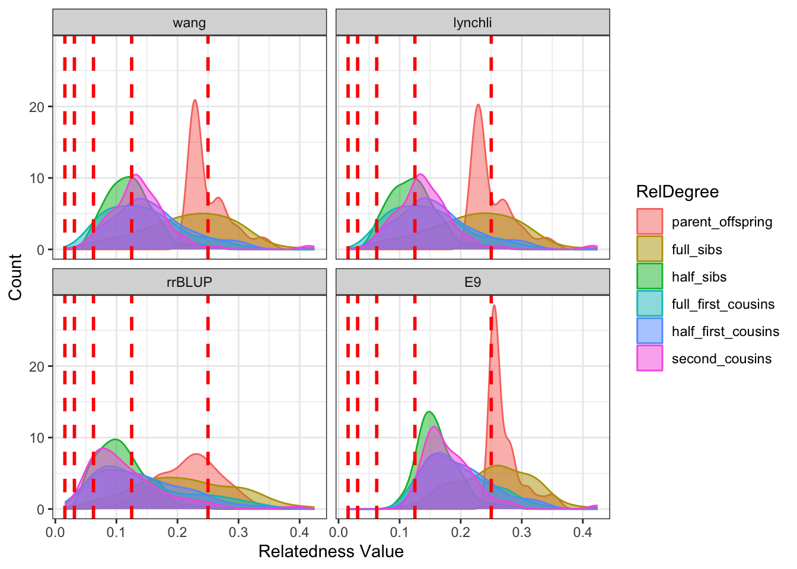